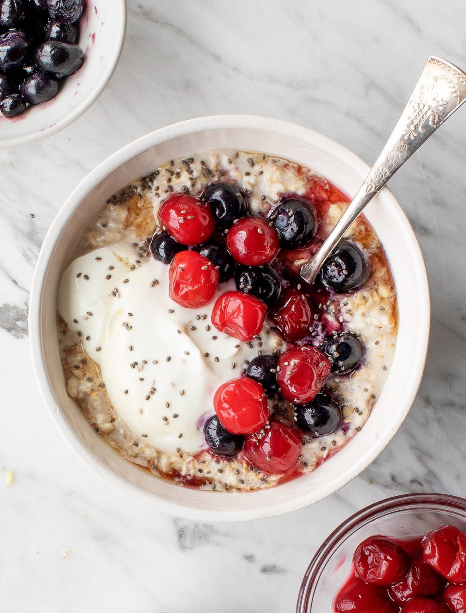

OVERNIGHT OATS

Overnight oats are the perfect breakfast for people on the go!
If you are like me, the last thing you want to do when you are running late
to work or school is to try to prepare a breakfast - let along one that is nutrient dense!
This is my go to morning breakfast. It's easy to make, quick, and doesn't require a culinary
degree to whip together. It's also a great recipe for those of you who meal prep. It's easy to
customize with whatever suits your fancy - fruit, sweets...get creative and enjoy!
Ingredients
- 1/3 cup milk
- 1/4 cup greek yogurt
- 1/4 cup rolled oats
- 2 teaspoons honey
- 2 teaspoons chia seeds
- 1 teaspoons ground cinnamon
- 1/4 cup fresh blueberries
Steps
- Combine milk, yogurt, oats, honey, chia seeds, and cinnamon in a 1/2 pint jar with lid
- Cover and shake until all ingredients are combined
- Add blueberries
- Cover and refridgerate overnight
- Wake up and enjoy!